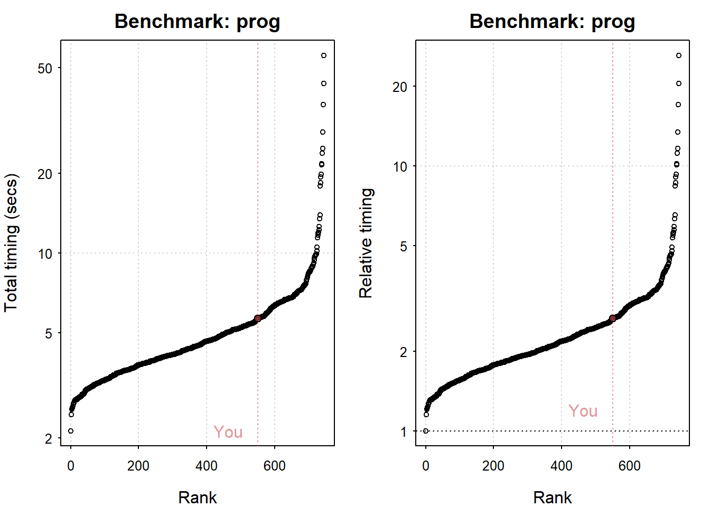
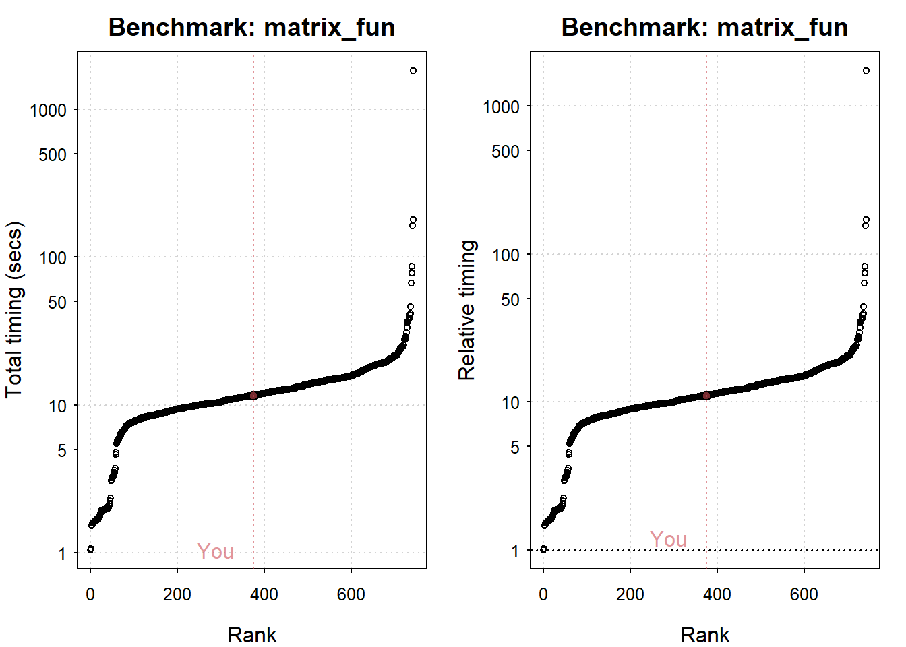

Code
library("Matrix")
N = 100
m = diag(1, N, N)
sp = sparseMatrix(1:N, 1:N, x = 1)
object.size(m)
#> 80216 bytes
object.size(sp)
#> 3104 bytes稀疏矩阵(Sparse matrices)对象仅存储非零元素，更节省内存
library("Matrix")
N = 100
m = diag(1, N, N)
sp = sparseMatrix(1:N, 1:N, x = 1)
object.size(m)
#> 80216 bytes
object.size(sp)
#> 3104 bytesparallelization
Parallel computing
library("parallel")
no_of_cores = detectCores()
no_of_cores
#> [1] 8parLapply（cl， x， FUN， ...）
parApply（cl = NULL， X， MARGIN， FUN， ...）
parSapply（cl = NULL， X， FUN， ...， simplify = TRUE， USE.NAMES = TRUE)
makeCluster()此函数指定要使用的处理器数量
library("parallel")
N = 10^4
sapply(1:N, sd)
cl = makeCluster(4)
parSapply(cl, 1:N, sd)
stopCluster(cl)Rcpp sugar
NumericVector IntegerVector CharacterVector LogicalVector
NumericMatrix IntegerMatrix CharacterMatrix LogicalMatrix
1字节（byte）= 8位（bit） 二进制数 = 1个 ASCII 字符。
International System of Units (SI)
1 kilobyte (kB) =(2^{10}) bytes
1 megabyte (MB) = (2{10}) kilobytes= (2{20}) bytes
# 随机存取存储器 Random access memory,RAM
benchmarkme::get_ram()
#> 6.32 GBstandard hard disk drives (HDDs)
Solid state drives (SSDs)
# 操作系统 2^8
.Machine$sizeof.pointer
#> [1] 8# CPU
res = benchmark_std()
plot(res)
#> Press return to get next plot
#> Press return to get next plot